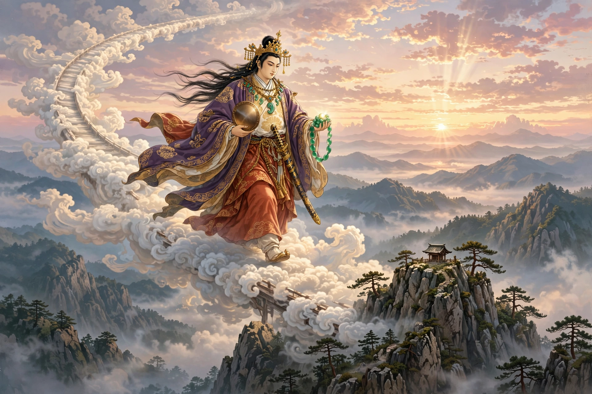

| Ninigi-no-Mikoto | |
|---|---|
| Japanese | 瓊瓊杵尊 |
| Parents | Ame-no-Oshihomimi (father); Takuhadakachi-haya-akitsuhi (mother) |
| Grandmother | Amaterasu |
| Spouse | Konohanasakuya-hime |
| Descendant | Emperor Jimmu (great-grandson) |
| Episode | Tenson kōrin — the descent from heaven |

Ninigi-no-Mikoto (瓊瓊杵尊) is a deity in Japanese mythology, the grandson of the sun goddess Amaterasu and the ancestor of the Japanese imperial line. His descent from the heavens to rule the earth, an episode known as the tenson kōrin ("descent of the heavenly grandson"), is one of the foundational myths of the Japanese state, recorded in the Kojiki and Nihon Shoki.
After the earthly deity Ōkuninushi surrendered his land to the heavenly kami, Amaterasu commanded her grandson Ninigi to descend and rule it. She bestowed on him the Three Sacred Treasures — the mirror Yata no Kagami, the sword Kusanagi no Tsurugi and the jewel Yasakani no Magatama — together with the promise that his line would reign "for ten thousand generations". Accompanied by a retinue of gods, including Ame-no-Uzume, Ninigi came down from Takamagahara by the floating bridge of heaven to the peak of Mount Takachiho in Hyūga (present-day Miyazaki Prefecture).
In Hyūga, Ninigi met Konohanasakuya-hime, the blossom princess, daughter of the mountain god Ōyamatsumi, and asked to marry her. Her father offered both his daughters; Ninigi chose the younger, Konohanasakuya, and rejected her elder sister Iwanaga-hime, the rock princess. Because of this, the chronicles say, the lives of emperors became as brief as cherry blossoms rather than enduring as rocks — the mythic explanation of human mortality. When Konohanasakuya became pregnant after a single night, Ninigi doubted the children were his; she proved their paternity by giving birth to three sons in a burning hut. Their line, through Hoori and Ugayafukiaezu, leads to Emperor Jimmu.